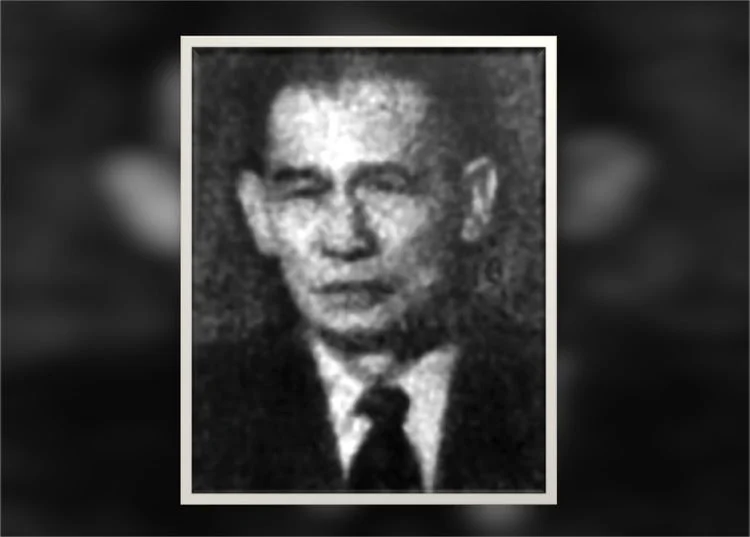
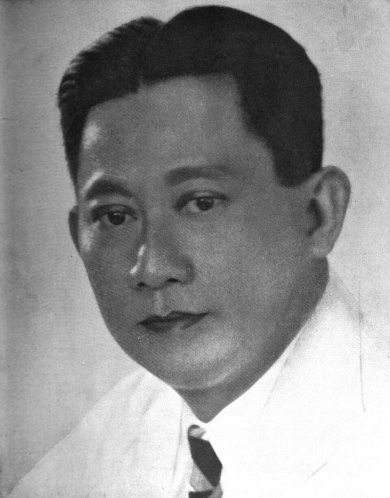
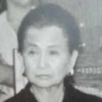
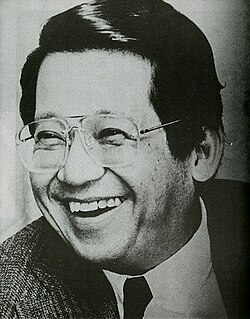
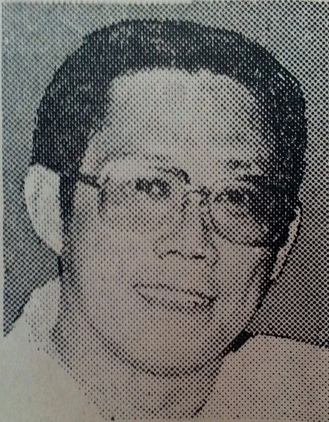
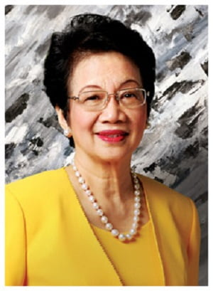
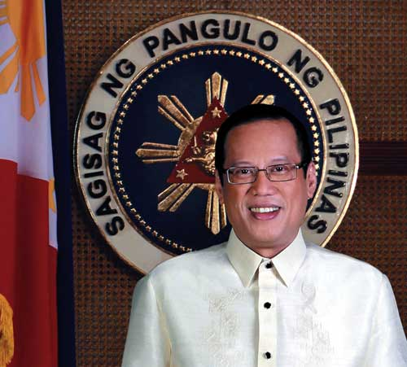
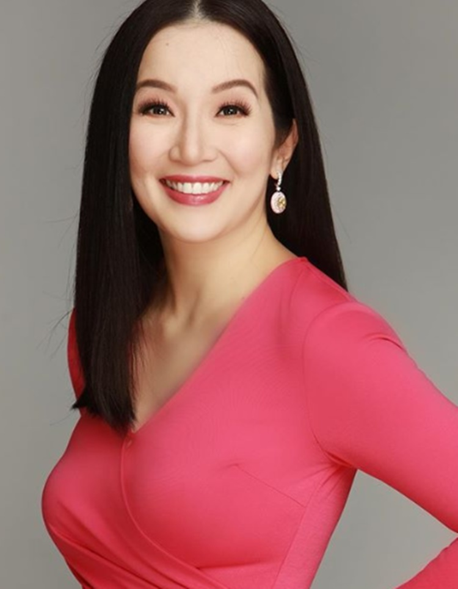
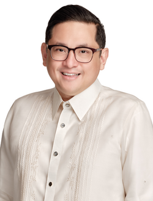
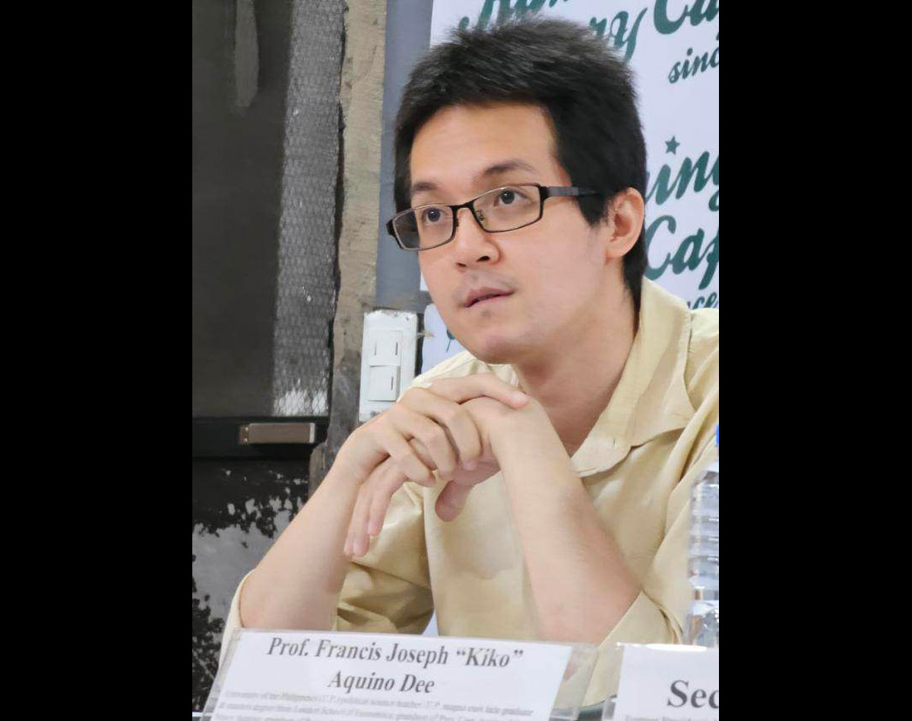

The 5 Generations Family Tree of Aquinos
1st Generation

Servillano Aquino
(1874-1959)
Revolutionary general during the Philippine Revolution
and Philippine-American War. Considered the patriarch of
the Aquino political clan.
2nd Generation

Benigno S. Aquino Sr.
(1894–1947)
Son of Servillano Aquino.
Served as Speaker of the National Assembly during
World War II.

Aurora Aquino
(1910–1998)
She was married to Benigno Aquino Sr. and was the mother
of Benigno "Ninoy" Aquino Jr..
3rd Generation

Benigno "Ninoy" Aquino Jr.
(1932–1983)
Son of Benigno Aquino Sr. Senator and leading opposition figure against the
Marcos regime. His assassination became a catalyst for the 1986 People Power
Revolution.

Agapito "Butz" Aquino
(1939–2015)
Former Senator of the Philippines from 1987 to 1995.
Served as Congressman of Makati's 2nd District from 1998 to 2007.

María Corazón "Cory" Sumulong Cojuangco-Aquino
(1933-2009)
She served as the 11th President of the Philippines from February 25, 1986, to June 30, 1992. She
was the first female president of the Philippines and became a symbol of democracy after the 1986
People Power Revolution that ended the rule of Ferdinand Marcos.
4th Generation

Benigno "Noynoy" Aquino III
(1960-2021)
Son of Ninoy Aquino and Corazon Aquino.
Served as the 15th President of the Philippines from 2010 to 2016.

Kris Aquino
(1971)
Kris Aquino has never held an elected government position. She is known primarily
for her career in television, film, and media rather than politics.

Paolo Benigno "Bam" Aguirre Aquino IV
(1977)
Known for sponsoring and supporting laws related to:
Free college education (Universal Access to Quality Tertiary Education Act)
Entrepreneurship and small businesses (Go Negosyo Act)
Youth development and education
5th Generation

Joshua Aquino
(1995)
Known as the son of Kris Aquino. He has appeared in political campaign activities,
but has never held public office.
James Carlos "Bimby" Aquino Yap Jr.
(2007)
Son of Kris Aquino. Reports have mentioned the possibility of a future political career,
but he has not held any government office

Francis Joseph "Kiko" Aquino Dee
(1991)
Political activist, scholar, and civic leader. Serves in advocacy and civil society roles, including involvement with the Ninoy and Cory Foundation and democratic reform campaigns.